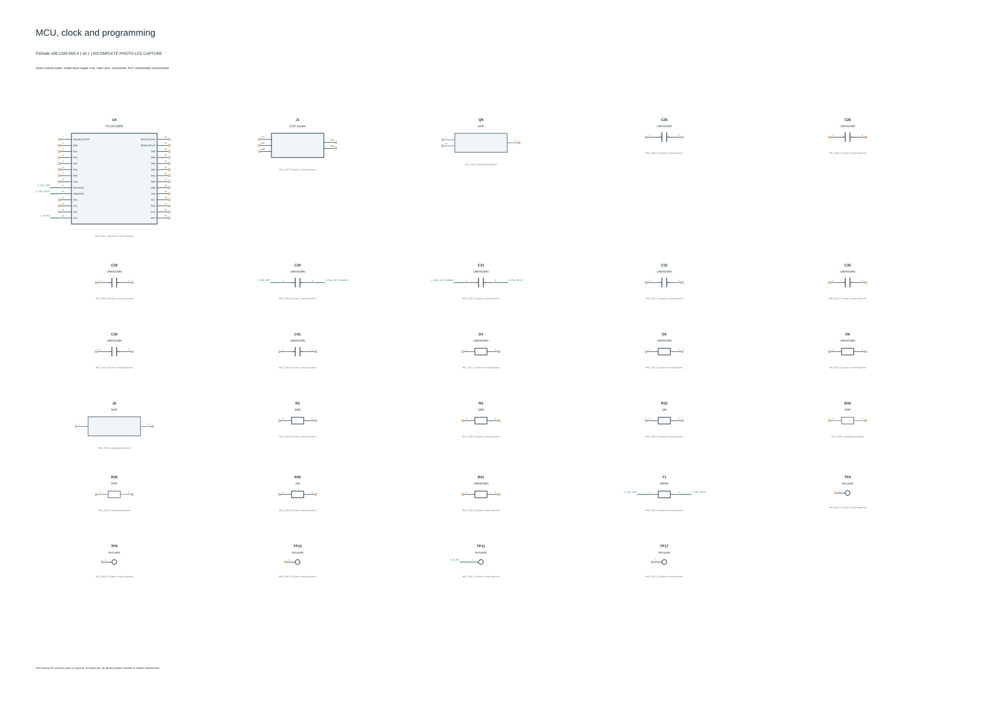
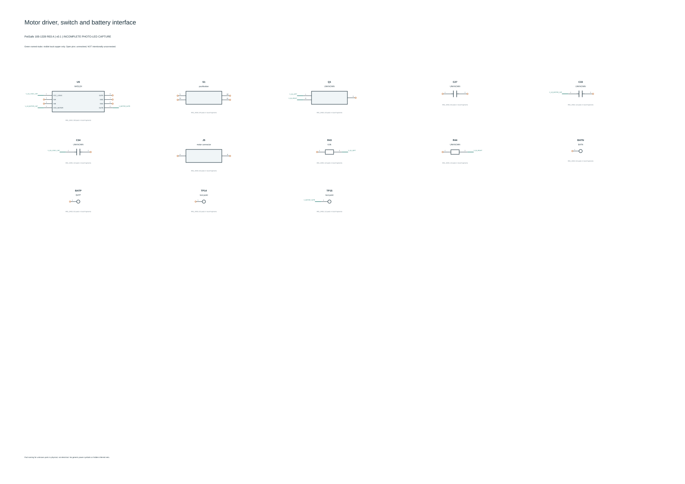
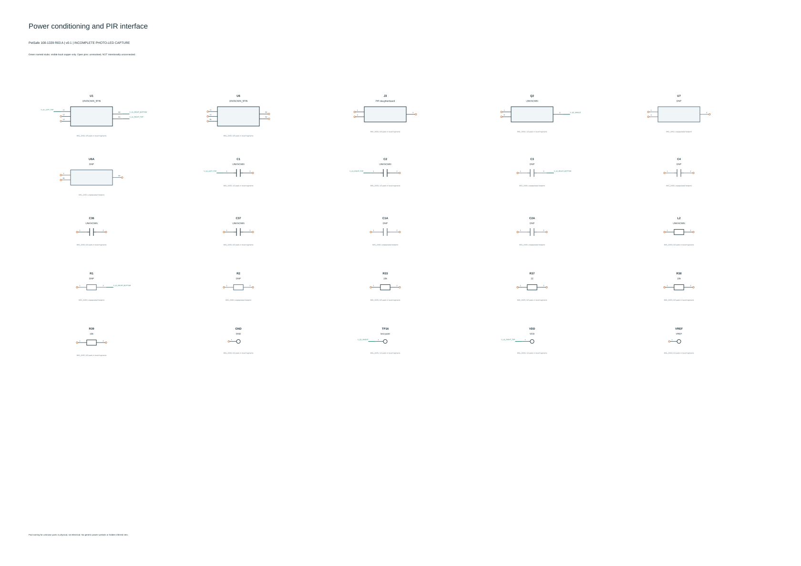
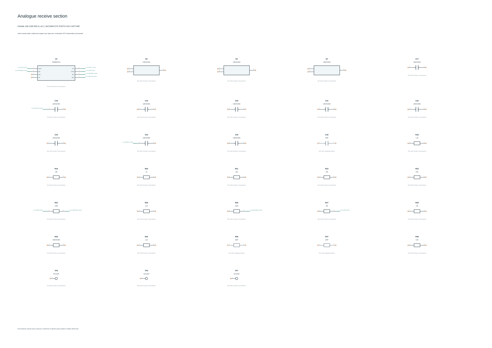
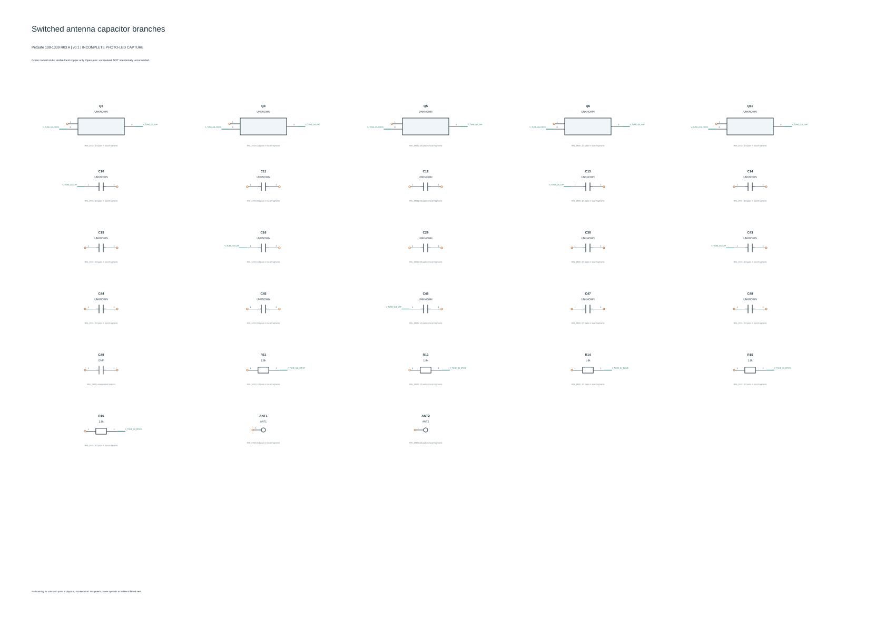
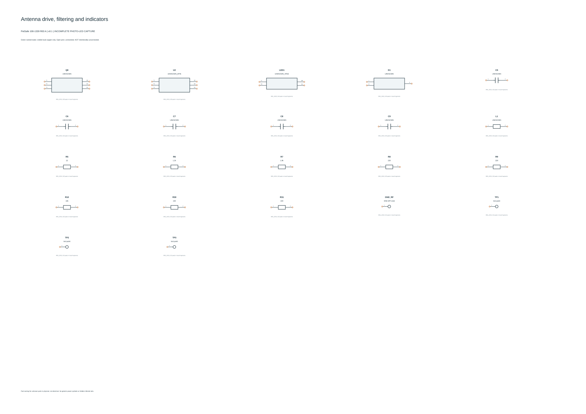

Incomplete photo-led reconstruction. These SVGs are independent previews generated from the model, not exports from KiCad. Unconnected symbol pins are unresolved, not verified no-connects. Native application validation is pending.





